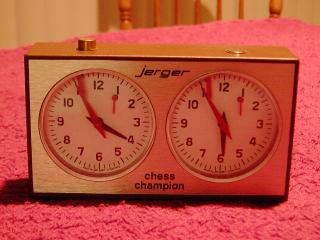

Содержание: История | Шахматные часы | Чемпионы мира
История
Шахматы появились в Индии примерно в 6 веке. Тогда игра называлась чатуранга. Потом она попала в Персию, а оттуда в Европу.
Правила, по которым играют сейчас, появились в Европе в 15 веке. Первый матч за звание чемпиона мира прошел в 1886 году.
Важные даты
- 6 век - чатуранга в Индии
- 15 век - современные правила
- 1886 - первый чемпион мира
- 1924 - создана FIDE (международная шахматная федерация)
Шахматные часы

На турнирах играют с шахматными часами. У них два циферблата, по одному на каждого игрока. Когда игрок сделал ход, он нажимает кнопку, и начинает идти время соперника.
Если у игрока закончилось время, он проигрывает. Быстрые партии называются блиц, в них на всю игру дается всего несколько минут.
Чемпионы мира
Некоторые известные чемпионы мира:
| Имя | Страна | Годы |
|---|---|---|
| Вильгельм Стейниц | Австрия | 1886-1894 |
| Хосе Рауль Капабланка | Куба | 1921-1927 |
| Михаил Ботвинник | СССР | 1948-1963 (с перерывами) |
| Анатолий Карпов | СССР | 1975-1985 |
| Гарри Каспаров | СССР, Россия | 1985-2000 |
| Магнус Карлсен | Норвегия | 2013-2023 |
Полный список есть на сайте FIDE.